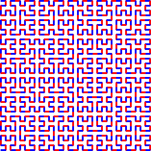
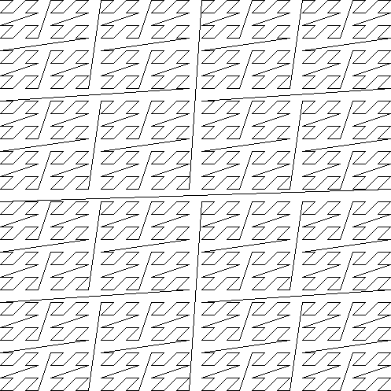
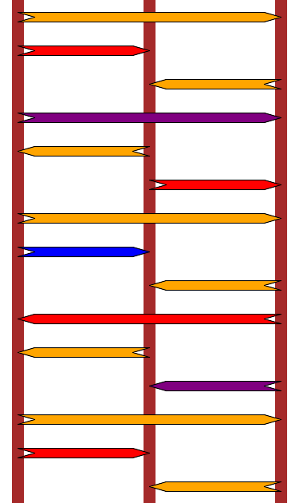

Solutions of xchg rax,rax
AuthorAlexandro Sanchez Date2016-10-12
Introduction
In words of xorpd, the author of xchg rax,rax:
xchg rax,raxis a collection of assembly gems and riddles I found over many years of reversing and writing assembly code. The book contains 0x40 short assembly snippets, each built to teach you one concept about assembly, math or life in general.Be warned - This book is not for beginners. It doesn't contain anything besides assembly code, and therefore some x86_64 assembly knowledge is required.
How to use this book? Get an assembler (Yasm or Nasm is recommended), and obtain the x86_64 instruction set. Then for every snippet, try to understand what it does. Try to run it with different inputs if you don't understand it in the beginning. Look up for instructions you don't fully know in the Instruction sets PDF. Start from the beginning. The order has meaning.
As a final note, the full contents of the book could be viewed for free on my website (Just google "xchg rax,rax").
The original release, which can be read online at [1], contains no official solutions, and some of the snippets doesn't even seem to yield a clearly defined "answer". Also, in his own words:
Is that the content of your book? Some assembly language instructions without comments?
Yes.
Is that a bad joke?
No, arranging almost meaningless sequences of assembler instructions against a black background is a form of art. You may call it nerd poetry.
Nevertheless, I recovered from old backups my own thoughts and solutions for some of the snippets, and uploaded them just in case it could be useful or interesting for someone.
[1] http://www.xorpd.net/pages/xchg_rax/snip_00.html
Solutions
Snippet 0x00
xor eax,eax
lea rbx,[0]
loop $
mov rdx,0
and esi,0
sub edi,edi
push 0
pop rbp
Different ways of setting several general purpose registers to 0.
Snippet 0x01
.loop:
xadd rax,rdx
loop .loop
Computes the rcx-th term of the Fibonacci sequence, assuming the initial state rax=0, rdx=1.
Snippet 0x02
neg rax
sbb rax,rax
neg rax
Boolean cast: rax := bool(rax), i.e. rax := rax ? 1 : 0.
Snippet 0x03
sub rdx,rax
sbb rcx,rcx
and rcx,rdx
add rax,rcx
Minimum function: rax := min(rax, rdx).
Snippet 0x04
xor al,0x20
Replaces uppercase with lowercase characters and vice-versa.
Snippet 0x05
sub rax,5
cmp rax,4
Allows to branch depending on whether rax is in range [5,9] using only one jbe jump.
Snippet 0x06
not rax
inc rax
neg rax
Does nothing since the instructions cancel each other.
Snippet 0x07
inc rax
neg rax
inc rax
neg rax
Does nothing since the instructions cancel each other.
Snippet 0x08
add rax,rdx
rcr rax,1
Computes the average, i.e. rax := (rax + rdx) / 2.
Note that it prevents overflow issues since rcr does a 33-bit rotation using the CF flag.
Snippet 0x09
shr rax,3
adc rax,0
Computes rax := (rax + 4) / 8.
This calculates rax / 8 rounded to the nearest integer (thanks @ZaneH).
Snippet 0x0A
add byte [rdi],1
.loop:
inc rdi
adc byte [rdi],0
loop .loop
Increments by one an arbitrarily long little-endian integer at rdi.
Snippet 0x0B
not rdx
neg rax
sbb rdx,-1
Computes the negation of the 128-bit integer stored in the RDX:RAX registers (thanks Aviya Erenfeld!).
Snippet 0x0C
mov rcx,rax
xor rcx,rbx
ror rcx,0xd
ror rax,0xd
ror rbx,0xd
xor rax,rbx
cmp rax,rcx
Registers rax, rcx end up with the same value, thanks to distributivity of ROR (with XOR).
rcx = rax
rcx = (rcx ^ rbx) >> 13
rax = (rax >> 13) ^ (rbx >> 13)
Snippet 0x0D
mov rdx,rbx
xor rbx,rcx
and rbx,rax
and rdx,rax
and rax,rcx
xor rax,rdx
cmp rax,rbx
Registers rdx, rbx end up with the same value, thanks to distributivity of AND (with XOR) and commutativity of XOR.
rdx = rbx
rbx = (rbx & rax) ^ (rcx & rax) // Associativity of AND
rax = (rdx & rax) ^ (rcx & rax) // Commutativity of XOR
Snippet 0x0E
mov rcx,rax
and rcx,rbx
not rcx
not rax
not rbx
or rax,rbx
cmp rax,rcx
Registers rax, rcx end up with the same value, thanks to DeMorgan's law.
rcx = rax
rcx = ~(rcx & rbx)
rax = ~rax | ~rbx
Snippet 0x0F
.loop:
xor byte [rsi],al
lodsb
loop .loop
Computes the following:
rsi[0] ^= al
rsi[1] ^= rsi[0]
rsi[2] ^= rsi[1]
rsi[3] ^= rsi[2]
...
This resembles a 8-bit CBC encryption scheme using al as IV, except that it uses the identity function for block cipher encryption, not a pseudorandom function with a key. Instead, the IV plays the role as key.
This was the staple home-made "crypto" in the early 80s home computer era.
Snippet 0x10
push rax
push rcx
pop rax
pop rcx
xor rax,rcx
xor rcx,rax
xor rax,rcx
add rax,rcx
sub rcx,rax
add rax,rcx
neg rcx
xchg rax,rcx
Different ways of swapping the contents of rax and rcx.
Snippet 0x11
.loop:
mov dl,byte [rsi]
xor dl,byte [rdi]
inc rsi
inc rdi
or al,dl
loop .loop
Compares two buffers rsi and rdi of length rcx. Assuming al is zero-initialized, it will remain as 0 unless the buffers differ.
Snippet 0x12
mov rcx,rdx
and rdx,rax
or rax,rcx
add rax,rdx
Computes (rax | rdx) + (rax & rdx), which can be simplified to rax + rdx.
See also Rich Schroeppel's Item 23 in HAKMEM.
Snippet 0x13
mov rcx,0x40
.loop:
mov rdx,rax
xor rax,rbx
and rbx,rdx
shl rbx,0x1
loop .loop
Computes rax + rbx.
See also: https://en.wikipedia.org/wiki/Adder_(electronics)
Snippet 0x14
mov rcx,rax
and rcx,rdx
xor rax,rdx
shr rax,1
add rax,rcx
Computes the average rounded to the lowest integer, i.e. rax := floor((rax + rdx) / 2), avoiding overflows (see also Snippet 0x08).
Snippet 0x15
mov rdx,0xffffffff80000000
add rax,rdx
xor rax,rdx
Casts the int32_t value in eax to an int64_t value in rax.
Note that this requires the 32 most significant bits in rax to be cleared.
Snippet 0x16
xor rax,rbx
xor rbx,rcx
mov rsi,rax
add rsi,rbx
cmovc rax,rbx
xor rax,rbx
cmp rax,rsi
Computes the following:
rsi := (rax ^ rbx) + (rbx ^ rcx)
if (overflew(rsi))
rax := 0
else
rax := rax ^ rcx
cmp(rax, rsi)
Observations:
- If rax == rbx: No overflow.
- If rcx == rbx: No overflow.
- If rax == ~rbx: Always overflows, except when rbx == rcx.
- If rbx == rax|rcx: No overflow.
- If rbx == rax&rcx: No overflow.
TODO: No idea about this one.
Snippet 0x17
cqo
xor rax,rdx
sub rax,rdx
Computes the absolute value of rax, i.e. rax := abs(rax).
Snippet 0x18
rdtsc
shl rdx,0x20
or rax,rdx
mov rcx,rax
rdtsc
shl rdx,0x20
or rax,rdx
cmp rcx,rax
Compares two consecutively obtained timestamps.
The instruction rdtsc stores the current 64-bit timestamp counter value in edx:eax, while the shl and or instructions aggregate the halves of each register into rax. Trivially, the second timestamp will always be larger than the first one.
Snippet 0x19
call .skip
db 'hello world!',0
.skip:
call print_str
add rsp,8
Calls print_str("hello world!");.
The return value of .skip is the address to the hardcoded string, and due to the stack layout, this will implicitly become the first argument of print_str.
This was a very common pattern in assembly language programs: The instruction sequence would be generated by a macro allowing coders to embed commands like PRINT_STR 'Hello, world!' in their code without having to define the string in the data segment, assign a symbol to it and then reference from code.
Snippet 0x1A
call .next
.next:
pop rax
Gets the rip register after the call instruction, i.e. rax := .next. This is needed to obtain the current instruction pointer in Position-Independent Code.
Snippet 0x1B
push rax
ret
Indirect branch to rax. Since there's no immediate arguments to cause further stack cleanup, this is equivalent to jmp rax.
Snippet 0x1C
pop rsp
Swaps the stack pointer with the address at the top of the current stack. One of the many stack pivot gadgets used during Return-Oriented Programming.
Snippet 0x1D
mov rsp,buff2 + n*8 + 8
mov rbp,buff1 + n*8
enter 0,n+1
Copies buff1 to buff2. The extra +1 and +8 take care of the side effects of enter, such as the extra values added before and after the buffer.
Note that the buff2 should be 16 bytes larger than buff1, specifically with 8 bytes of padding at the beginning and at the end to prevent OOB writes after executing the enter instruction.
Snippet 0x1E
cmp al,0x0a
sbb al,0x69
das
Maps each value in range [0x0, 0xF] stored in al into its hexadecimal representation, i.e. [0x30, ..., 0x39, 0x41, ..., 0x46].
Snippet 0x1F
.loop:
bsf rcx,rax
shr rax,cl
cmp rax,1
je .exit_loop
lea rax,[rax + 2*rax + 1]
jmp .loop
.exit_loop:
Computes the Collatz sequence for any starting number stored in rax.
See also: https://en.wikipedia.org/wiki/Collatz_conjecture
Snippet 0x20
mov rcx,rax
shl rcx,2
add rcx,rax
shl rcx,3
add rcx,rax
shl rcx,1
add rcx,rax
shl rcx,1
add rcx,rax
shl rcx,3
add rcx,rax
Computes rcx := 1337 * rax.
Snippet 0x21
mov rsi,rax
add rax,rbx
mov rdi,rdx
sub rdx,rcx
add rdi,rcx
imul rax,rcx
imul rsi,rdx
imul rdi,rbx
add rsi,rax
mov rbx,rsi
sub rax,rdi
Computes the following after corresponding simplifications:
rax := rax * rcx - rbx * rdx
rbx := rax * rdx + rbx * rcx
This corresponds to the multiplication of two complex numbers: (a + bi) * (c + di) = (ac - bd) + (ad + bc)i.
Note that it is using only three multiplications to calculate the four distinct products in the result. This is the essence of the Karatsuba Algorithm for polynomial multiplication (thanks @eleemosynator).
Snippet 0x22
mov rdx,0xaaaaaaaaaaaaaaab
mul rdx
shr rdx,1
mov rax,rdx
Computes rax := rax / 3 rounding to the closest integer.
Snippet 0x23
.loop:
cmp rax,5
jbe .exit_loop
mov rdx,rax
shr rdx,2
and rax,3
add rax,rdx
jmp .loop
.exit_loop:
cmp rax,3
cmc
sbb rdx,rdx
and rdx,3
sub rax,rdx
Computes rax := rax % 3.
Note that 22k = 1 (mod 3) and 22k+1 = 2 (mod 3). Hence, in order to calculate rax % 3 one can sum the digits of the number written in base four (i.e. sum pairs of bits at even locations) and take the result modulo 3.
There is also a cute bit of code at the end that does the final reduction modulo 3 without any branches. This trick is the base 4 equivalent of using the sum of the digits of a number in base 10 to check for divisibility by 3. Both tricks work in the same way because both 10 and 4 leave a remainder of 1 when divided by 3 (thanks @eleemosynator).
Snippet 0x24
mov rbx,rax
mov rsi,rax
.loop:
mul rbx
mov rcx,rax
sub rax,2
neg rax
mul rsi
mov rsi,rax
cmp rcx,1
ja .loop
.exit_loop:
This computes the multiplicative inverse of rax modulo 264 using the Newton-Raphson algorithm, which we can write as follows:
uint64_t multiplicative_inverse_mod_2_64(uint64_t x)
{
uint64_t z = x;
uint64_t t = 0;
do {
t = x * z;
z = z * (2 - t);
} while (t > 1);
return z;
}
This paper has a good analysis: https://arxiv.org/pdf/1209.6626.pdf.
Notice also that the loop exit condition takes advantage of the intermediate multiplication x * z to early out and also avoid having to maintain a separate loop counter. Also note that the loop condition is checked at the end - this trades off the cost of an extra couple of operations at the end of the algorithm against adding an extra branch in the middle of the loop which would be more expensive on modern architectures (thanks @eleemosynator).
Snippet 0x25
xor eax,eax
mov rcx,1
shl rcx,0x20
.loop:
movzx rbx,cx
imul rbx,rbx
ror rcx,0x10
movzx rdx,cx
imul rdx,rdx
rol rcx,0x10
add rbx,rdx
shr rbx,0x20
cmp rbx,1
adc rax,0
loop .loop
Register rax acts as a counter, and rcx loops from 0x100000000 to 0x0. Each iteration will split the ecx values in two 16-bit halves, x and y, and verify the following property:
(x*x + y*y) >> 20 == 1
Since x and y are each 16-bit, x*x + y*y must be in range [0x0, 0x1FFFC0002], thus (x*x + y*y) >> 20 must be either 0 or 1. Therefore, each iteration is actually verifying that: x*x + y*y >= 0x100000000. This is equivalent to x^2 + y^2 >= 0x10000^2.
Since (x,y) iterate each in range [0x0000, 0xFFFF] as rcx decreases. The value stored in rax after the snippet has been executed will be the number of points in [0, 65535]^2 lying outside the circumference of radius 65536 centered at the origin.
This ratio of points will be 1 - pi/4, yielding an expected value of rax := 0x100000000 * (1 - pi/4).
Snippet 0x26
mov rdx,rax
shr rax,7
shl rdx,0x39
or rax,rdx
Rotates the value in the rax register 7 bits to the right. Equivalent to ror rax, 7.
Snippet 0x27
mov ch,cl
inc ch
shr ch,1
shr cl,1
shr rax,cl
xchg ch,cl
shr rax,cl
This is rax >> (floor(cl / 2) + floor((cl + 1) / 2)) which will be identical to rax >> cl when cl is below 64.
Once cl exceeds 64, this snippet will return 0 whereas rax >> cl will return rax shifted right by cl % 64. They will
then come back in line once cl exceeds 128, and then the whole process will repeat itself. Sometimes, two halves do not a whole make.
Snippet 0x28
clc
.loop:
rcr byte [rsi],1
inc rsi
loop .loop
Right-shifts by one an entire buffer at rsi with a length of rcx bytes. This can also be interpreted as right-shifting by one, i.e. dividing by two, an arbitrarily long big-endian 8*rcx-bit integer at rsi.
Snippet 0x29
lea rdi,[rsi + 3]
rep movsb
Repeats the first 3 bytes at rsi starting from offset rsi+3 until rcx bytes have been written.
This could be used to fill a texture of 24-bit pixels with a constant color stored in the first pixel of the buffer. In this case, the first 3 bytes would be written, and then the snippet would be executed with rcx := 3 * width * height - 3.
Snippet 0x2A
mov rsi,rbx
mov rdi,rbx
.loop:
lodsq
xchg rax,qword [rbx]
stosq
loop .loop
This moves the last element of the array of rcx keywords pointed by rbx to the front.
For instance, let rcx := 4 and rbx point to [Q0, Q1, Q2, Q3, Q4] with quadwords Qi. Then, after executing this snippet the contents of rbx will be: [Q4, Q0, Q1, Q2, Q3].
Snippet 0x2B
xor eax,eax
xor edx,edx
.loop1:
xlatb
xchg rax,rdx
xlatb
xlatb
xchg rax,rdx
cmp al,dl
jnz .loop1
xor eax,eax
.loop2:
xlatb
xchg rax,rdx
xlatb
xchg rax,rdx
cmp al,dl
jnz .loop2
Cycle-finding using Floyd's Algorithm.
This snippet assumes that rbx points to a table of values of a function that has a single byte argument and single byte value.
Consider the sequence xn=f(xn-1). For any starting value this sequence will eventually start cycling as f
only takes 256 distinct values and has no memory.
The first half of the snippet executes Floyd's Tortoise and Hare algorithm to find a collision point inside the cycle and the second
part locates the head of the cycle which is the result of the snippet. To see this, assume that the sequence has a starting segment
of length l followed by a cycle of length n. If our Tortoise and Hare collide at step s, then their locations within the cycle must
be identical and we must have:
s - l = 2 s - l (mod n) => s = 0 (mod n)
Which implies that the Tortoise's location within the cycle is equal to -l modulo n, Hence, if we start another Tortoise from the initial point and have both Tortoises walk at the same rate, they will collide at the head of the cycle.
In C this looks like:
typedef unsigned char byte;
byte snippet_0x2b(byte *tbl, byte x0) // tbl in EBX, x0 is set zero
{
byte t, h; // Tortoise and Hare
t = h = x0;
do {
t = tbl[t];
h = tbl[tbl[h]];
} while (t != h);
for (byte t2 = x0; t2 != t;) {
t = tbl[t];
t2 = tbl[t2];
}
return t;
}
(thanks @eleemosynator)
Snippet 0x2C
mov qword [rbx + 8*rcx],0
mov qword [rbx + 8*rdx],1
mov rax,qword [rbx + 8*rcx]
mov qword [rbx],rsi
mov qword [rbx + 8],rdi
mov rax,qword [rbx + 8*rax]
This will move rsi or rdi into rax depending on whether rcx and rdx are different or not, respectively. This is equivalent to: rax := (rcx == rdx) ? rdi : rsi. This assumes that all rbx-relative offsets point to valid memory. Effectively a comparison and conditional move implemented using just mov instructions.
The M/o/Vfuscator project takes this concept to a whole new extreme and delivers a C compiler the produces binaries which only contain mov instructions (with a tiny amount of cheating for loops).
Snippet 0x2D
mov rdx,rax
dec rax
and rax,rdx
Determines if rax is a power of two by computing rax := rax & (rax - 1). The result will be zero if and only if rax is a power of two.
Snippet 0x2E
mov rdx,rax
dec rdx
xor rax,rdx
shr rax,1
cmp rax,rdx
Determines if rax is a power of two larger than zero by comparing (rax ^ (rax - 1)) >> 1 and rax - 1. Both values will be equal if and only if rax is a power of two larger than zero. Note that the case rax == 0 will result on different values due to the right-shift operation.
See also: Snippet 0x2D.
Snippet 0x2F
xor eax,eax
.loop:
jrcxz .exit_loop
inc rax
mov rdx,rcx
dec rdx
and rcx,rdx
jmp .loop
.exit_loop:
This snippet stores the number of 1-bits in rcx into the rax register. This relies on the trick features in Snippet 0x2D to clear the rightmost 1-bit until rcx is zero.
See also: Snippet 0x2D.
Snippet 0x30
and rax,rdx
sub rax,rdx
and rax,rdx
dec rax
and rax,rdx
This snippet computes ((((rax & rdx) - rdx) & rdx) - 1) & rdx. This expression is equivalent to rax & rdx.
Snippet 0x31
mov rcx,rax
shr rcx,1
xor rcx,rax
inc rax
mov rdx,rax
shr rdx,1
xor rdx,rax
xor rdx,rcx
The snippet is nicely laid out in four stanzas to give us a hint of what's going on. The first and third calculate x^(x>>1) which
transforms an index to the corresponding Gray Code sequence element (see also Sloane's A003188). Hence the whole snippet
will calculate the xor of two consecutive Gray Codes. These will differ in exactly one bit which corresponds to the highest power
of 2 that divides x+1 (Sloane's A006519). This is also equivalent to ~x&(x+1).
(thanks @eleemosynator)
Snippet 0x32
mov rcx,rax
mov rdx,rax
shr rdx,1
xor rax,rdx
popcnt rax,rax
xor rax,rcx
and rax,1
The Gray Code is at the center of this one as well. The snippet calculates (popcnt(x^(x>>1))^x) & 1 where popcnt counts
the number of set bits in a register (population count, sometimes also referred to as weight). We can unpack this by using the
distributive property of AND over XOR: (popcnt(x^(x>>1))&1) ^ (x&1). Now the first part is just the parity of the Gray Code
of index x (lowest bit of weight tells us if there are an even or odd number of set bits) and the second part is the lowest bit of
x and they will always be equal. One way to see this is to think of the parity as the XOR of all the bits in an integer, hence
in calculating the parity of x^(x>>1) every bit of x will appear twice except for bit 0 which is shifted off the bottom and only
shows up once. Another way to see this is by inspecting the Gray Code inversion formula which we are about to meet in the next snippet.
Snippet 0x33
mov rdx,rax
shr rdx,0x1
xor rax,rdx
mov rdx,rax
shr rdx,0x2
xor rax,rdx
mov rdx,rax
shr rdx,0x4
xor rax,rdx
mov rdx,rax
shr rdx,0x8
xor rax,rdx
mov rdx,rax
shr rdx,0x10
xor rax,rdx
mov rdx,rax
shr rdx,0x20
xor rax,rdx
Maps a Gray Code to its corresponding sequence number. This is the inverse operation of x^(x>>1). See also snippet 0x31.
rax := (rax >> 0x01) ^ rax
rax := (rax >> 0x02) ^ rax
rax := (rax >> 0x04) ^ rax
rax := (rax >> 0x08) ^ rax
rax := (rax >> 0x10) ^ rax
rax := (rax >> 0x20) ^ rax
See also: https://en.wikipedia.org/wiki/Gray_code
Snippet 0x34
mov ecx,eax
and ecx,0xffff0000
shr ecx,0x10
and eax,0x0000ffff
shl eax,0x10
or eax,ecx
mov ecx,eax
and ecx,0xff00ff00
shr ecx,0x8
and eax,0x00ff00ff
shl eax,0x8
or eax,ecx
mov ecx,eax
and ecx,0xcccccccc
shr ecx,0x2
and eax,0x33333333
shl eax,0x2
or eax,ecx
mov ecx,eax
and ecx,0xf0f0f0f0
shr ecx,0x4
and eax,0x0f0f0f0f
shl eax,0x4
or eax,ecx
mov ecx,eax
and ecx,0xaaaaaaaa
shr ecx,0x1
and eax,0x55555555
shl eax,0x1
or eax,ecx
Bit Reversal Permutation - the cornerstone of FFT algorithms. From the Bithacks page: https://graphics.stanford.edu/~seander/bithacks.html#ReverseParallel.
Snippet 0x35
mov edx,eax
and eax,0x55555555
shr edx,0x1
and edx,0x55555555
add eax,edx
mov edx,eax
and eax,0x33333333
shr edx,0x2
and edx,0x33333333
add eax,edx
mov edx,eax
and eax,0x0f0f0f0f
shr edx,0x4
and edx,0x0f0f0f0f
add eax,edx
mov edx,eax
and eax,0x00ff00ff
shr edx,0x8
and edx,0x00ff00ff
add eax,edx
mov edx,eax
and eax,0x0000ffff
shr edx,0x10
and edx,0x0000ffff
add eax,edx
The basic Population Count algorithm (count the number of set bits in an word). There is a marginally better implementation on the Bithacks page that uses a cheeky subtraction step at the start and fewer ANDs: https://graphics.stanford.edu/~seander/bithacks.html#CountBitsSetParallel
Snippet 0x36
dec rax
mov rdx,rax
shr rdx,0x1
or rax,rdx
mov rdx,rax
shr rdx,0x2
or rax,rdx
mov rdx,rax
shr rdx,0x4
or rax,rdx
mov rdx,rax
shr rdx,0x8
or rax,rdx
mov rdx,rax
shr rdx,0x10
or rax,rdx
mov rdx,rax
shr rdx,0x20
or rax,rdx
inc rax
Maps positive values in rax to their next power of two, or itself if already a power of two. Non-positive values get mapped to 0.
This works by decreasing the number and replicating the most-significant non-zero bits to all their relatively least-significant bits, resulting in a value of the form 2^N - 1. Finally, the number is incremented to obtain the desired power of two.
Snippet 0x37
mov rdx,rax
not rdx
mov rcx,0x8080808080808080
and rdx,rcx
mov rcx,0x0101010101010101
sub rax,rcx
and rax,rdx
Another one from Bithacks: Determine if a word has a zero byte. Allows one to scan for the location of a zero (ASCIIZ terminator for example) by loading one machine word at a time.
Snippet 0x38
bsf rcx,rax
mov rdx,rax
dec rdx
or rdx,rax
mov rax,rdx
inc rax
mov rbx,rdx
not rbx
inc rdx
and rdx,rbx
dec rdx
shr rdx,cl
shr rdx,1
or rax,rdx
This little gem calculates the next biggest integer with the same weight (number of set bits). For example, it produces the following sequences (feeding it its previous output every step):
- 1, 2, 4, 8, 16, 32, ... (powers of 2 are the weight-1 sequence)
- 0b11, 0b101, 0b110, 0b1001, 0b1010, 0b1100, ...
- 0b111, 0b1011, 0b1101, 0b1110, 0b10011, ...
Try it in python:
# Snippet 0x38 - Calculate the successor of same weight
from __future__ import print_function
def bsf(x):
n = 0
while not (x & 1):
x >>= 1
n += 1
return n
def popcount(x):
n = 0
while x:
n += 1
x &= (x - 1) # Clear the bottom-most set bit - c.f. snippet 0x2f
return n
def next_in_weight_class(x):
l = bsf(x)
d = x | (x - 1)
x = d + 1
d = (d + 1) & ~d
x |= (d - 1) >> (1 + l)
return x
def show_sequence(x, n=10):
for i in range(n):
print(popcount(x), bin(x))
x = next_in_weight_class(x)
# Show first few weight classes
for w in range(1, 5):
show_sequence((1 << w) - 1) # First element of a weight class w repunit(w) = 2^w - 1
(thanks @eleemosynator)
Snippet 0x39
mov rdx,0xaaaaaaaaaaaaaaaa
add rax,rdx
xor rax,rdx
Computes the negabinary representation of rax.
Instead of having the binary basis (+1, +2, +4, +8, +16, +32, ...), negabinary numbers have the basis (+1, -2, +4, -8, +16, -32, ...). For instance, the number 3 (i.e. 0b11) gets mapped into 0b111 (i.e. 7) since 3 = 4 - 2 + 1.
Snippet 0x3A
mov rdx,rax
neg rdx
and rax,rdx
mov rdx,0x218a392cd3d5dbf
mul rdx
shr rax,0x3a
xlatb
This snippet computes the amount of (left-most) leading zeros via De Bruijn sequences.
The first block determines the highest power of two dividing rax by computing rax := rax & (-rax). This results in the sequence A006519 whose first elements are: 0, 1, 2, 1, 4, 1, 2, 1, 8, ...
The second block together with the xlatb instruction computes rax := rbx[(rax * 218A392CD3D5DBF) >> 58] where rbx points to a De Bruijn table with 64 entries. This is equivalent to computing the binary logarithm of the previous 64-bit integer.
See also: http://supertech.csail.mit.edu/papers/debruijn.pdf
Snippet 0x3B
cdq
shl eax,1
and edx,0xc0000401
xor eax,edx
This snippet computes:
if (eax & (1 << 31))
eax = (eax << 1) ^ 0xC0000401
else
eax <<= 1;
This snippet calculates the next state of a Galois LFSR with characteristic polynomial 0x1C000401
(x32 + x31 + x30 + x10 + 1). As this polynomial is primitive, the LFSR will cycle
through all non-zero 32-bit integers. It also uses the cdq trick to expand the top bit into a mask which it then ands with the polynomial constant in order to avoid using a branch.
(thanks @eleemosynator)
Common in pseudo-random number generators and guarantees a period of 232−1. Several coefficients satisfy this property, though their number of terms in thir characteristic polynomial may vary. Similarly, coefficients for generators of period 264−1 exist as well. Libraries such as NoMSVCRT rely on this pattern, see cntr32 and cntr64.
(thanks @DamianFekete)
Snippet 0x3C
mov rbx,rax
mov rdx,rbx
mov rcx,0xaaaaaaaaaaaaaaaa
and rbx,rcx
shr rbx,1
and rbx,rdx
popcnt rbx,rbx
and rbx,1
neg rax
mov rdx,rax
mov rcx,0xaaaaaaaaaaaaaaaa
and rax,rcx
shr rax,1
and rax,rdx
popcnt rax,rax
and rax,1
mov rdx,rax
add rax,rbx
dec rax
neg rax
sub rdx,rbx
This snippet expects a number in rax and returns two outputs which are -1, 1 or 0 in rax and rdx. If we interpret the input as a sequence number and the outputs as steps in two dimensions (i.e. dx and dy) we can draw the result:

This truly mind-blowing snippet draws a Hilbert Curve in 21 assembly instructions without using recursion or branches. You can experiment with the Python implementation of the algorithm in xorpd_0x3c_hilbert.py (requires Pillow).
(thanks @eleemosynator)
Snippet 0x3D
mov rcx,1
.loop:
xor rax,rcx
not rax
and rcx,rax
not rax
xor rdx,rcx
not rdx
and rcx,rdx
not rdx
shl rcx,1
jnz .loop
The registers rax and rdx serve both as inputs and outputs of this snippet. Starting it at (0, 0) and treating the results as points in the 2D plane, we get the following pattern:

This is the Morton Curve or Z-order curve. It's based around the idea of visiting all points on the 2D plane in a hierarchical nearest-neighbour Z-pattern. To understand the generation algorithm consider the following method for incrementing an integer with N bits:
- For k in [0, N-1]:
- Flip bit k of the integer
- If the bit transitioned from 0 to 1 then STOP
The loop in the algorithm above tracks the propagation of the carry with the loop exiting when it finds a 0 bit that can finally absorb the carry by turning into a 1. Expressed in the same language, the algorithm in the snippet does the following (naming the inputs x and y):
- For k in [0, N-1]:
- Flip bit k of x
- If the bit transitioned from 0 to 1 then STOP
- Flip bit k of y
- If the bit transitioned from 0 to 1 then STOP
We have exactly the same carry-propagation structure except that the carry propagates from bit k of x to bit k of y before moving up to bit k+1 of x. This operation is exactly equivalent to incrementing an integer that is constructed by interleaving the bits of x and y, with the bits of x taking the even positions and the bits of y on the odd positions.
Both the snippet version and the interleaved increment version of the algorithm are implemented in the Python script xorpd_0x3d_morton.py (requires Pillow).
(thanks @eleemosynator)
Snippet 0x3E
mov rdx,rax
shr rdx,1
xor rax,rdx
popcnt rax,rax
and rax,0x3
Computes the direction of the lines in the (Heighway) Dragon Curve by computing popcnt(rax ^ (rax >> 1)) & 3. This produces the sequence A246960, the fixed point of the morphism {0 -> (0,1), 1 -> (2,1), 2 -> (2,3), 3 -> (0,3)}.
Snippet 0x3F
mov rbx,3
mov r8,rax
mov rcx,rax
dec rcx
and rax,rcx
xor edx,edx
div rbx
mov rsi,rdx
mov rax,r8
or rax,rcx
xor edx,edx
div rbx
inc rdx
cmp rdx,rbx
sbb rdi,rdi
and rdi,rdx
bsf rax,r8
This snippet takes a counter as input in rax and return two numbers between 0 and 2 in rsi and rdi and a number between 0 and 63
in rax. The use of rsi and rdi is probably a hint as they are the source index and destination index registers indicating that
something is to be moved from one position to another. If we draw the outputs for successive values of rax we get:

This sequence is the solution to the Towers of Hanoi, and the snippet above implements its binary solution.
According to the legend, there is a hidden monastery in Hanoi which contains a large room with three time-worn posts and 64 golden disks. The monks, all sworn to secrecy, have been following rules of the Towers of Hanoi and moving the disks one at a time from peg to peg. It is said that when they have completed the sequence and all 64 golden disks are the middle peg then the universe will finally come to an end.
How appropriate then that the 64th and last snippet in the book solves a 64-disk Hanoi puzzle which once completed will signal the end of the universe. However there is one strange quirk - the third stanza that calculates the destination peg does something like (((m | m - 1) + 1) % 3 + 1) % 3 where the second reduction modulo 3 is done using the cmp/sbb/and pattern. Why not just increment m | m - 1 before the first reduction? It turns out that doing so would give the wrong destination for several of the end-game moves as m | m - 1 would become 264-1 and hence increment to zero instead of the intended 1.
The monks of Hanoi need not worry, if they follow the instructions of this snippet the universe will come to an orderly end as originally intended.
(thanks @eleemosynator)